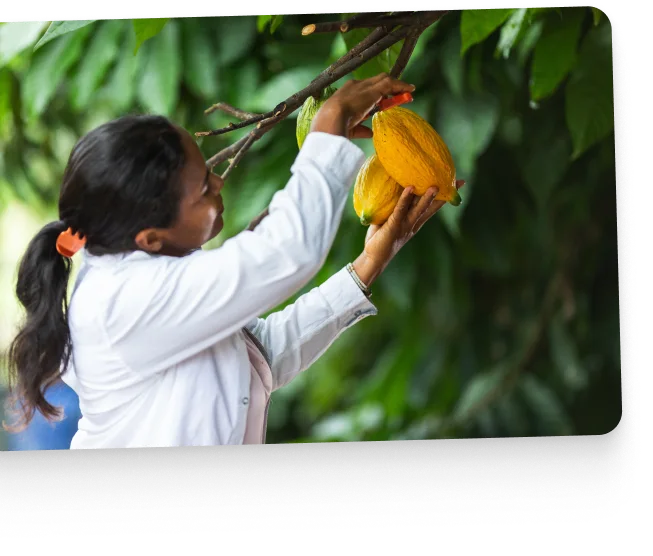

Een reis vol tedere zorg

Al meer dan 100 jaar is onze zacht smeltende chocolade alleen mogelijk dankzij een unieke samenwerking tussen continenten en culturen.
Op elke stap van deze reis is het van essentieel belang dat alles en iedereen die erbij betrokken is met zorg en respect wordt behandeld, zodat we met trots onze chocolade kunnen blijven maken voor de komende 100 jaar en daarna.
Uit de Alpen
Daarom is het zo belangrijk dat we een rol spelen in het bouwen aan een duurzamere toekomst voor de zuivel.
We zijn die reis al begonnen door tijd door te brengen met boeren, de externe samenwerking te intensiveren en samen te werken met anderen in de industrie aan verschillende duurzaamheidsprojecten, zoals:
Het verminderen van de CO2-uitstoot
Tegen 2030 willen we onze CO₂-uitstoot van begin tot eind met een derde verminderen in vergelijking met het voorgaande decennium. Aangezien de zuivelproductie een bijdrage levert aan CO2-uitstoot, onderzoeken we manieren om kuddebeheer, voederbronnen, meststoffen en onze mestverwerking te verbeteren.
Tedere zorg voor onze koeien
Gezonde koeien produceren minder CO2 en via ons 'Alpencharter'-initiatief werken we samen met lokale boeren en belonen we hen die ernaar streven het welzijn van hun dieren te blijven verbeteren.
Daarom werken we samen met boeren die hun kuddes klein houden, met gemiddeld zo'n zestig koeien. Dit maakt de zorg voor hen eenvoudiger en lonender. Onze boeren kennen ook al hun koeien bij naam om de empathische band sterk te houden.
Afrika
De rijke cacao die we gebruiken uit Ghana en Ivoorkust geeft Milka zijn kenmerkende chocoladesmaak.
We betrekken hier al 100% van onze cacaovolumes via Cocoa Life, wat onze boeren en hun gemeenschappen op drie belangrijke manieren ten goede komt:**
Bescherming en herstel van onze bossen
Bomen zijn de beste vriend van een cacaoplant! Ze helpen de bodem te verbeteren, erosie te verminderen en een habitat te bieden aan ongedierte-etende dieren, terwijl ze de cacaoplanten ook helpen hun peulen te laten groeien met de juiste hoeveelheid schaduw tegen regen of zon. In samenwerking met onze boeren hebben we al 8,5 miljoen bomen geplant, met nog veel meer op komst.
Het ontwikkelen van rendabelere cacao-ondernemingen
Trainingsprogramma's helpen boeren meer uit hun gewassen te halen. Met de steun van lokale NGO's en cacaoleveranciers hebben we al meer dan 243.000 boeren geholpen hun levensonderhoud te verbeteren.
Verbetering van de leefomstandigheden van cacao-gemeenschappen
We spelen een sleutelrol in het verbeteren van het leven van de leden van de Cocoa Life-gemeenschappen. Door onze samenwerking met lokale overheden, partners in de cacao-toeleveringsketen en NGO's, versterken we de positie van vrouwen en bieden we toegang tot kwaliteitsonderwijs voor kinderen. Zelfs de schillen van de cacaobonen die we oogsten, kunnen worden gebruikt om nieuwe producten te produceren, zoals cacao zeep. Dit helpt onze landbouwgemeenschappen om extra inkomsten te verwerven buiten de traditionele cacaoteelt om hun levensonderhoud te versterken.
In jouw handen!
Dit is een bijzonder moment in onze reis van zorgzame zorg: wanneer onze lila wikkels hun weg vinden naar gretige handen over de hele wereld.*
Hoewel onze verpakkingen in de eerste plaats zijn ontworpen om de chocolade erin te beschermen, hebben we stappen ondernomen om een meer circulaire economie van verpakkingen te ondersteunen.
VERMINDEREN VAN PLASTIC
We hebben het gebruik van plastic in onze Milka Tender-producten in Duitsland met 60% verminderd en alle plastic vensters uit onze Milka-chocolade-eierdozen verwijderd. Daarnaast hebben we ook 108 ton karton uit de markt gehaald.
VERDUURZAMING VAN VERPAKKINGSMATERIAAL
We streven ernaar ons verpakkingsmateriaal voortdurend te verbeteren door het te ontwerpen voor recyclebaarheid, standaardverpakkingen te vervangen, papieren verpakkingen te testen en alternatieve materialen te gebruiken om onze langetermijnambitie te bereiken: het stimuleren van een circulaire economie voor verpakkingen.
Hoewel 98% van onze verpakkingen al ontworpen is voor recyclebaarheid, is ons doel om 100% te bereiken in 2025.
Foto's zijn uitsluitend ter illustratie.
Algemene disclaimer
De bovenstaande informatie is gebaseerd op de wereldwijde doelen en initiatieven van Mondelez International en is niet specifiek voor Milka. Voor meer informatie, zie het Snacking Made Right rapport van Mondelez.
Link* Zie voor meer informatie Meer informatie
** Zie voor meer informatie over het Cocoa Life programma: Over cocao Informatie
vergeleken met de vorige standaardverpakking 2022 / 2023 (zowel 4-pack als 5-pack).